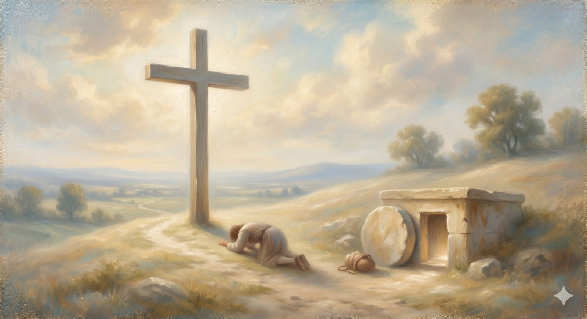

The Cross & the Sepulchre
Where the burden finally falls — the gospel itself, and the heart of the whole journey.
"God put [Christ] forward as a propitiation by his blood... so that he might be just and the justifier of the one who has faith in Jesus." Romans 3:25–26 (ESV)
The pilgrim comes, at last, to a small rise in the road. At the top stands a cross, and a little below it, an open tomb. And Bunyan describes what happens next in the plainest words he can find: as Christian comes up to the cross, the burden he has carried since the City of Destruction loosens from his shoulders, falls from his back, tumbles down the hill, and rolls into the open mouth of the tomb — and he sees it no more.
He had tried to be rid of that weight in every other way. He could not lift it in the City. It nearly drowned him in the Slough. Mr. Worldly Wiseman promised to relieve it in the town of Morality and only made it heavier. It comes off here, and only here. This is the center of the whole road — the place every other landmark has been leading toward, and the place every landmark after it will look back to. So it is worth asking the question the cross most often leaves unspoken: why did it have to be this way at all?
Part OneWhy the cross? Why not simply forgive?
It is a fair question, and a serious one — pressed by some of the most thoughtful people who have ever considered the faith. If God is loving and all-powerful, why could he not simply wave the debt away? Why the blood? Why the cost?
The New Testament's answer turns on something a sentimental idea of forgiveness skips past: God is just. Not merely kind, not merely powerful — just, all the way down, the way the universe he made has a moral grain that runs true. Sin is not a clerical error to be quietly deleted. It is, in one piercing phrase, treason against infinite worth — a real debt, a genuine rupture between creatures and their Creator. A judge who heard all the evidence and simply shrugged the case away would not be good. He would be corrupt. Real love does not pretend the wrong did not happen; real justice cannot.
So the cross is what it looks like when God refuses to be either unjust or unloving — when he will neither pretend the debt away nor leave us to pay it. Paul says it with careful precision: God put Christ forward as the place where wrath is absorbed, so that he might be just and the justifier of the one who has faith in Jesus. Both words matter. Just — the debt is truly paid, not ignored. And justifier — the one who pays it is God himself, in the person of his Son. The cross is not God's love overruling his justice. It is God's love satisfying it.
📖 The Scripture behind this Direct / Entailedwhat’s this?›
The claim: At the cross God remains both just and loving: the debt of sin is really paid (not waved away), and the one who pays it is God himself in his Son — so the cross satisfies God’s justice rather than overruling it.
- Romans 3:25–26 (ESV) — “whom God put forward as a propitiation by his blood … so that he might be just and the justifier of the one who has faith in Jesus.”God is shown to be both just (the debt is paid) and justifier (he pays it himself).
- Isaiah 53:5 (ESV) — “He was pierced for our transgressions … upon him was the chastisement that brought us peace.”The punishment that brings our peace falls on the substitute.
- 2 Corinthians 5:21 (ESV) — “For our sake he made him to be sin who knew no sin, so that in him we might become the righteousness of God.”A real exchange: our sin reckoned to him, his righteousness to us.
The case for Entailed. The fuller system — that God’s justice required satisfaction, that mere forgiveness-by-fiat would compromise his righteousness, that the cross is therefore necessary and not merely chosen — is built by holding these texts together with what Scripture says about God’s justice (that he ‘will by no means clear the guilty,’ Exodus 34:7) and the wages of sin (Romans 6:23). That synthesis is good and necessary consequence rather than a lone proof-text. So the bare fact of substitution is direct; the doctrine of its necessity is entailed.
Where they meet. Scripture states that Christ bore our punishment so God could be both just and justifying; comparing Scripture with Scripture shows why it had to be so. Together they ground the page’s claim that the cross is not God’s love overruling his justice but his love satisfying it.
Penal substitution is widely held across confessional Protestantism and is the historic Reformed view; the texts state the substitution directly, while its necessity is drawn by good and necessary consequence.
Part TwoThe robe you did not weave
But the falling burden is only half of what happens on the hill. In Bunyan's telling, the moment Christian's burden rolls away, three Shining Ones come to him. The first says, your sins be forgiven. The second strips off his rags and clothes him in new garments. The third sets a mark on his forehead and gives him a sealed scroll to carry, and tells him to look on it as he runs.
Every piece of that is the gospel in pictures. The forgiveness is real and full. But notice the robe — because grace is not only the cancelling of a debt; it is the gift of a standing the pilgrim never earned. Jesus told the same thing as a story: a younger son who had wrecked his life rehearses a speech on the road home, and before he can finish it, his father — who in that culture would never run, who would lose all dignity by running — picks up his robes and runs to him, and calls for the best robe, a ring, sandals, a feast. The rags of the journey are covered. The ring restores his authority. The feast announces, in public, that the shamed one has been received back into full standing. The father is moving toward the son before the son has earned a thing.
That is what is given at the cross. Not merely a clean record — a borrowed righteousness, Christ's own standing laid over us like a robe we did not weave. We do not arrive at the feast having made ourselves presentable. We are made presentable by being clothed.
📖 The Scripture behind this Direct / Entailedwhat’s this?›
The claim: Grace gives not only a cleared record but a positive standing the pilgrim never earned — Christ’s own righteousness credited to us, like a robe we did not weave.
- 2 Corinthians 5:21 (ESV) — “… so that in him we might become the righteousness of God.”We become a righteousness that originates in God, not in ourselves.
- Philippians 3:9 (ESV) — “not having a righteousness of my own that comes from the law, but that which comes through faith in Christ.”Paul disowns his own righteousness and receives one from outside himself.
- Romans 4:5 (ESV) — “And to the one who does not work but believes in him who justifies the ungodly, his faith is counted as righteousness.”Righteousness is counted (credited, imputed) to the believer who trusts.
The case for Entailed. The precise doctrine — that what is credited is specifically Christ’s own active righteousness, laid over us as a positive status distinct from mere pardon — is drawn by synthesizing these passages (the imputed righteousness ‘of God’ / ‘through faith in Christ’ is read as Christ’s, since it is ours only ‘in him’). That last step is good and necessary consequence rather than a single sentence. So the crediting of righteousness is direct; the identification of it as Christ’s righteousness imputed is entailed.
Where they meet. Scripture states that a righteousness not our own is counted to us through faith; comparing the texts shows whose it is and how complete. The page’s point stands directly: we are made presentable by being clothed, not by making ourselves presentable.
Imputation is the historic Reformation reading of these texts; the crediting language is direct, while ‘Christ’s righteousness specifically’ is entailed. Roman Catholic theology reads these texts as infused rather than imputed righteousness — a real confessional divide worth noting.
In plain terms
Two things happen at the cross, and you need both. Your debt is paid — that is forgiveness. And you are given a righteousness that was never yours — that is the robe. One deals with your past; the other gives you a future standing you could not have earned.
This is why the gospel is news and not advice. Advice tells you what to do. News tells you what has been done. You do not climb this hill to try harder. You climb it to receive.
Part ThreeThe sealed scroll: how you can be sure
Then there is the scroll — sealed, given to carry, to be read on the road. It is the pilgrim's assurance, and where it comes from matters more than almost anything else on this page.
Assurance is not the same as feeling confident. Feelings rise and fall; the road has dark valleys ahead where they will fail altogether. The scroll does not rest on how the pilgrim feels about himself. It rests on what was done at the cross and sealed by the Spirit — God's own pledge, marking the one who belongs to him. Scripture calls the Holy Spirit exactly this: the seal, the guarantee of what is promised. So when assurance is grounded rightly, it does not look inward at the strength of our grip on Christ. It looks to the cross at the strength of his grip on us. That is why it can be carried through the dark — and it is why, further up the road at the Hill Difficulty, when the pilgrim loses the scroll, the answer is not to manufacture a better feeling but to go back and find again what was always true.
📖 The Scripture behind this Directwhat’s this?›
The claim: Assurance does not rest on the strength of our feelings or our grip on Christ, but on what was done at the cross and sealed by the Spirit — his grip on us.
- Ephesians 1:13–14 (ESV) — “you were sealed with the promised Holy Spirit, who is the guarantee of our inheritance.”The Spirit himself is the seal and the down-payment — God’s pledge, not our feeling.
- John 10:28–29 (ESV) — “I give them eternal life … no one will snatch them out of my hand. … no one is able to snatch them out of the Father’s hand.”Security rests on the strength of his grip, not ours.
- 2 Timothy 1:12 (ESV) — “for I know whom I have believed, and I am convinced that he is able to guard …”Assurance looks to the One trusted and his ability to keep, not to the self.
The Christological grounding of assurance is stated directly in these texts; this is also the consistent witness of the Reformed tradition, but it rests here on the verses themselves.
Assurance does not look inward at our grip on Christ. It looks to the cross at his grip on us.
The road aheadThe burden, and the empty tomb
One detail of Bunyan's scene is easy to miss: the burden does not just fall off. It rolls into the open tomb — into the sepulchre beside the cross — and is seen no more. The grave that should have been the end of the story is where the weight of sin is finally buried. And the tomb is open because it is empty. The same event that paid the debt also broke the power of death, so that what is laid down here is not only forgiven but gone, swallowed up by a grave that could not hold its occupant either.
This is the hinge of the whole road. Behind it lie the City, the Slough, the detour, the gate, the house of evidence — all the ground that brought the pilgrim, burdened, to this hill. Ahead lie the long climb, the valleys, the dark castle, and the city at the end. But the weight is off now. Whatever the road still holds, the pilgrim walks the rest of it unburdened — not because the journey gets easy, but because the thing he could never carry has rolled away into an empty grave. From here on, he travels light.